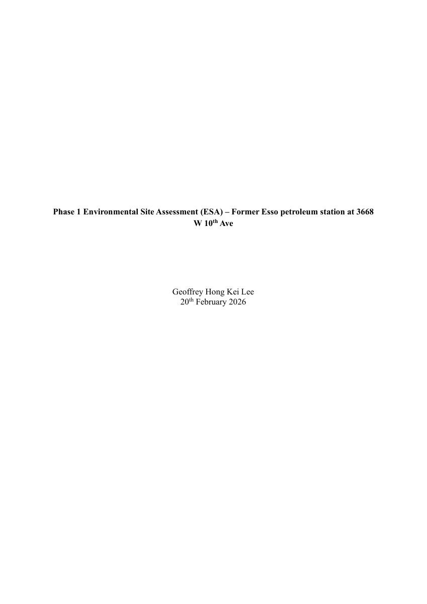
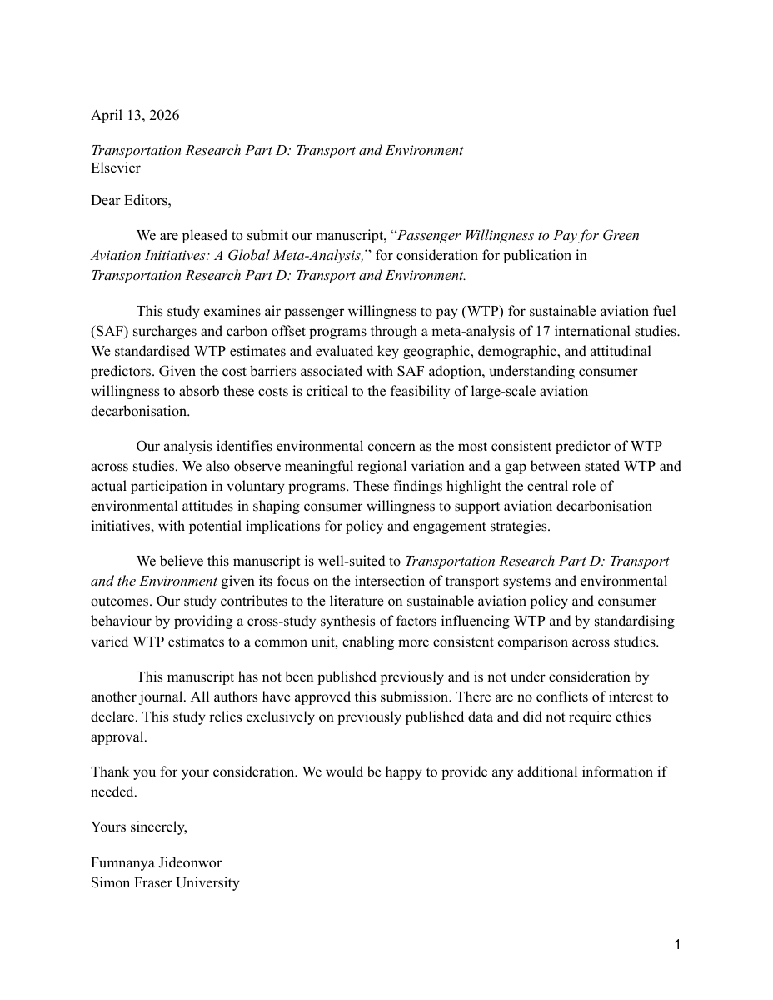
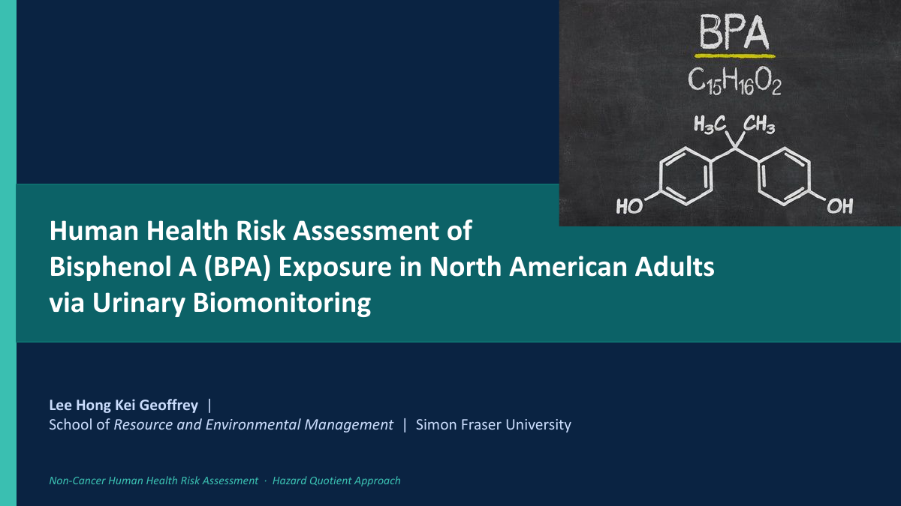
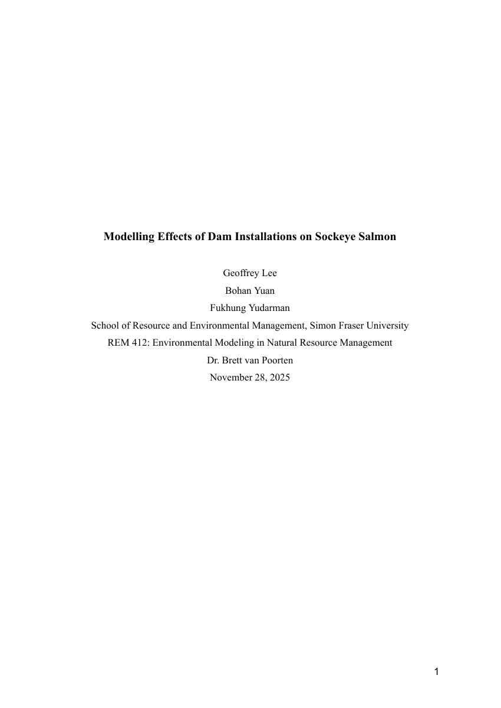
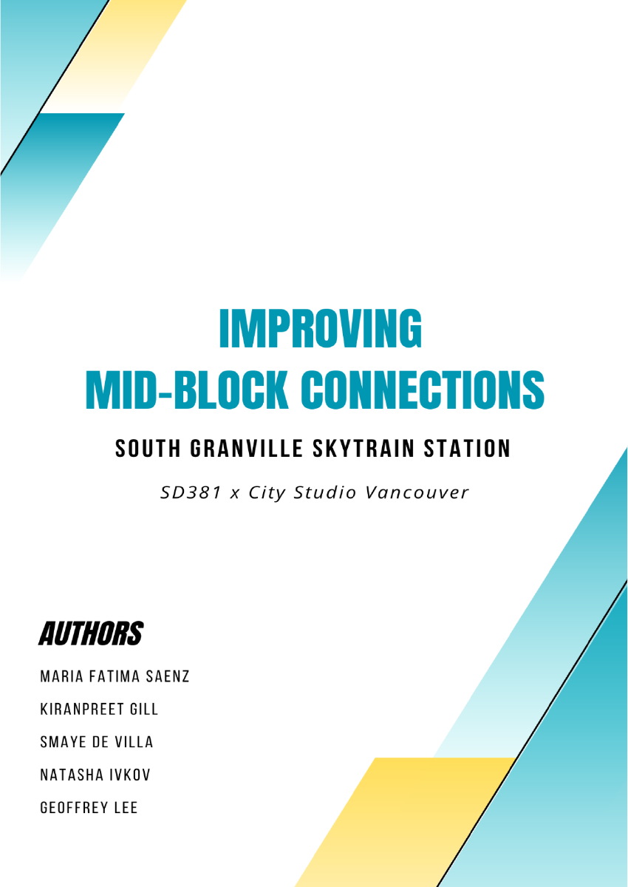
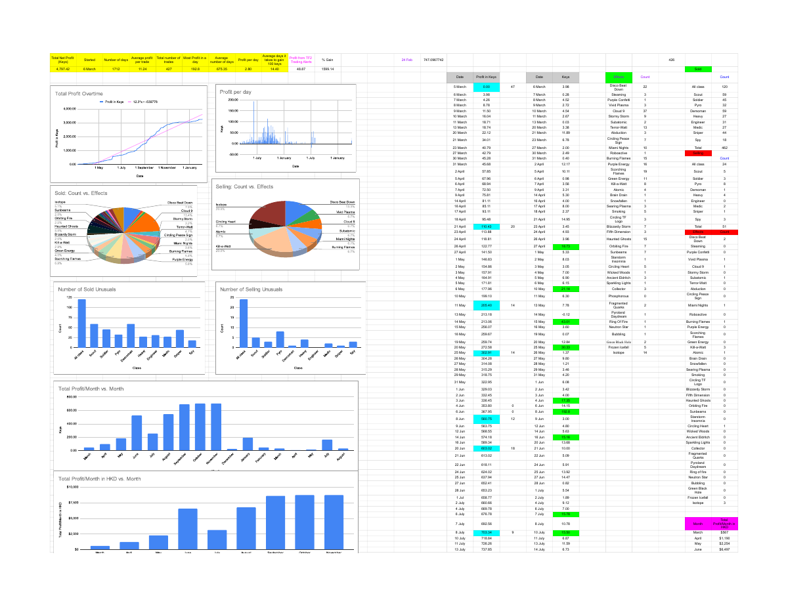

BC CSR Tool
A screening tool that compares soil and groundwater lab results against BC CSR Schedule 3.1 thresholds.
I enjoy finding issues and inefficiencies. Introducing alternatives that are more productive, effective and capable.

I am an environmental technician with expertise in habitat restoration, wildlife monitoring and field data collection. I graduated from SFU as a Resource Environmental Management student, completed numerous projects and created  bccsrtool.ca with more exciting projects to come.
bccsrtool.ca with more exciting projects to come.
Simon Fraser University · Resource and Environmental Management
A screening tool that compares soil and groundwater lab results against BC CSR Schedule 3.1 thresholds.

Environmental assessment · GIS
Reviewed historical aerial imagery to identify areas of potential concern at a former fuel station and recommend where to sample in a Phase II investigation.

Research · Meta-analysis
Co-authored a meta-analysis of 17 international studies on what passengers would pay for sustainable aviation fuel and carbon offsets.

Human health risk assessment
Used urinary biomonitoring data from Canada and the U.S. to estimate adult BPA exposure and compare it with health benchmarks.

Fisheries · Population modelling
Modelled how hypothetical dam impacts could affect sockeye salmon populations and maximum sustainable yield in British Columbia.

Urban design · Transit access
Co-developed proposals for safer, more welcoming pedestrian routes for young teens around South Granville SkyTrain Station.

Excel · Business analytics
Built a spreadsheet to track trades, monitor profit and returns over time, and compare sales by item category.
Earls Kitchen + Bar · Part-time
Vancouver, BC
Stanley Park Ecology
Monitored beaver activity at Beaver Lake and Lost Lagoon and helped maintain bog habitat.
BC CSR Tool · Self-employed
Built a tool to compare soil and groundwater lab results against BC CSR Schedule 3.1 thresholds.
Stanley Park Ecology
Surveyed and removed invasive plants and monitored restoration sites in Stanley Park.
Engaging Minds Consulting Ltd. · Seasonal
Recorded water restriction compliance with ArcGIS Survey123 and helped map 322 routes across 12 municipalities.
E-commerce · Self-employed
Ran an independent business and built Excel dashboards to track inventory and sales.
HKU Laboratory for Space Research · Internship
Reviewed research to inform experimental design and kept project documentation organized.
Simon Fraser University
Resource and Environmental Management